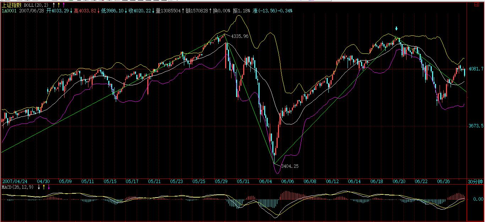
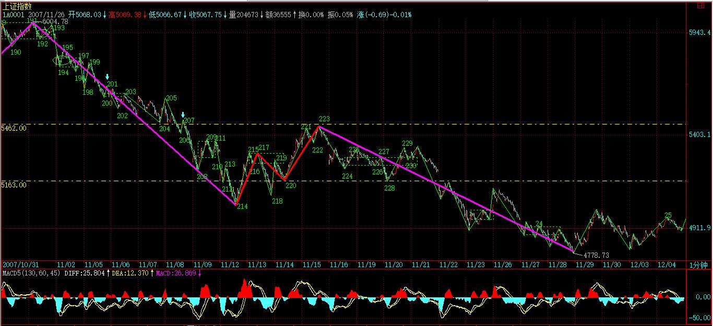
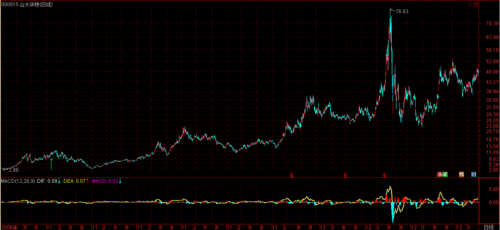

(2007-12-03 22:33:08)
注意，这里给出的是中阴阶段结束时间的辅助判断，【韶山映山红】中阴阶段结束时间的判断。和第三类买卖点的形态结构判断有什么不同？★可以做个专题，以后研究。】
并不是一个绝对性的判断，如同用MACD判断背驰一样，只是一个辅助性，但由于准确率极高，绝对的判断反而因为太复杂而不实用，所以就可以一般性地利用这进行判断。【韶山映山红】言下之意，对于中阴阶段的结束时间，还是有一个方法，可以做绝对的判断。★可以做个专题，以后研究。】
一般来说，这个中阴阶段结束时间的辅助判断的有效性可以达到接近100%，很少有例外。【韶山映山红】有效性可以达到接近100%，问题是技巧性与熟练程度很关键。也就是说，学会了，还要能运用。★可以做个专题，以后研究。】
当然，由于是辅助性判断，所以技巧性与熟练程度就很关键了。这就如同玩杂技，训练有素的上台出错的几率很小，而一个训练都没有的一上台肯定出错。【韶山映山红】错了就是自己的问题，又有人要说缠师耍滑头了。】
这个辅助判断，可以利用所有软件都有的一个指标：布林通道。一般在软件上都用BOLL表示。该指标一般都三条线，上、中、下三个轨道。
一般性地，在上轨以上和下轨以下运行是超强状态，【韶山映山红】什么情况下，在上轨以上和下轨以下运行，不是超强状态呢？★可以做个专题，以后研究。】
一般中枢移动时肯定会出现，【韶山映山红】有多肯定？★可以做个专题，以后研究。】
唯一区别是前者是上涨超强，后者是下跌超强。【韶山映山红】中枢移动时肯定会出现在上轨以上和下轨以下运行的超强状态。是移动开始的时候还是结束的时候？★所谓中枢移动，也就是趋势形成或者趋势延伸，也就是说，至少先要有一个本走势类型的中枢。中枢形成的过程，使得MA20均线走平，估算标准差函数STD也走平。这种情况下，一旦股价出现在上轨以上和下轨以下运行的超强状态，也就意味着有一个短时间的快速涨跌，形成的K线斜率不但远超MA20均线的斜率，还要超过估算标准差函数STD的斜率。这种情况不可能持续，估算标准差函数STD的线很快就会追上来，所以这种情况展示的只是快速突破的那一小段，然后就是估算标准差函数STD的线继续远离，MA20均线向收盘线靠拢。超强状态不一定有中枢移动，中枢移动很容易出现超强状态，因为中枢移动，也就是说，中枢的离开段不背驰，一般都是快速涨跌的离开中枢，否则就要靠小级别延伸了。★以后研究。】
【韶山映山红】一般1分钟线段中枢移动的时候，30分钟K线会在上轨和下轨附近运行。缠论是1分钟笔构成1分钟线段，1分钟线段构成1分钟中枢，然后再组成1分钟走势类型，这时候才有中枢移动的说法。所以，1分钟图上看BOLL函数是惨不忍睹的，30分钟图的BOLL函数对应着1分钟走势。★★以后研究。】
【韶山映山红】BOLL指标公式：
BOLL:MA(CLOSE,20);
UB:BOLL+2*STD(CLOSE,20);
LB:BOLL-2*STD(CLOSE,20);
】
【韶山映山红】估算标准差函数STD的计算。收盘价与均线偏差的平方，再做成均线，然后开根。】
注意，用这个指标有一个很好的辅助判断第二类买卖点，有时候也可以用来判断第一类买卖点。【韶山映山红】如果有本级别趋势背驰，就可以当下判断，不需要这些辅助判断了。那么，这个辅助判断就是针对小转大的第二类买卖点和第一类买卖点。小转大刚开始的时候，是原走势的中继中枢，还是走势转折，并不能当下辨别，所以这个辅助判断就格外珍贵了。】
一般来说，从上轨上跌回其下或从下轨下涨回其上，都是从超强区域转向一般性区域，【韶山映山红】从上轨之上跌破上轨，从下轨之下涨破下轨，都是一次冲锋之后的中继。】这时候，如果再次的上涨或回跌创出新高或新低但不能重新有效回到超强区域，【韶山映山红】第二次冲锋的力度，不能比第一次更强。判断标准是，是否重新有效回到超强区域。】那么就意味着进入中阴状态了，也就是第一类买卖点出现了。【韶山映山红】有一个问题，上证指数日线图6124、5178的两轮都没有走到超强区域。30分钟图也是。★可以做个专题，以后研究。】
【韶山映山红】
但更有效的是对第二买卖点的辅助判断，一般来说，在进入中阴状态，上轨和下轨都会滞后反应，也就是等第一次回跌或回升后再次向上或下跌时，上轨和下轨才会转向，【韶山映山红】快速涨跌的时候转向早，涨跌越不剧烈转向越晚。】
而这时候转向的上轨和下轨，往往成为最大的阻力和支持，使得第二类买卖点在其下或其上被构造出来。
一个例子，就是上海大盘在6004点时构成的第二类卖点，【韶山映山红】6004点的二卖是哪个级别的？对应哪个一卖？★★★以后研究。】
【韶山映山红】第一次回跌后再次向上时，上轨和下轨才会转向，这里说的转向是三段反弹的时候。
还有一个例子就是6月20日那天的第二类买卖点。

个股方面，000938是一个经典的例子，9月14日的第一类卖点，10月8日的第二类卖点，太教科书了。
【韶山映山红】000938紫光股份。】
000999的10月10日的第一类卖点以及11月6日的第二类卖点，也同样教科书。
【韶山映山红】000999三九医药，2010.02.24变更为华润三九。】
这些例子太多，而且在不同的级别中都一样有效。
注意，有人可能说本ID上面那两个例子都是自己的股票，那肯定对。其实，别的股票更准确，例如000002，这股票够大众情人了，请看他的周线，40.78元那周，看看究竟发生了什么事竟然构成了周线的第一卖点？
【韶山映山红】000002万科A。周线图，一次冲锋之后的中继，二次冲锋的力度不能比第一次更强。“一般来说，从上轨上跌回其下或从下轨下涨回其上，都是从超强区域转向一般性区域，这时候，如果再次的上涨或回跌创出新高或新低但不能重新有效回到超强区域，那么就意味着进入中阴状态了，也就是第一类买卖点出现了。”】
不过，布林通道最有用的，还是关于中阴结束时间的预判上。一般来说，布林通道的收口，就是对中阴结束时间的最好提示。
但这里有一定的技巧性，不是1分钟级别就一定要看1分钟的布林通道的，例如下图，一个5分钟的中阴过程，对应的是看30分钟的布林通道。
一般来说，某一级别的布林通道收口，就意味着比这低级别的某个中阴过程要级别扩展或结束了，一般都对应着有相应的第三类买卖点。
下图这个例子请好好研究一下，里面还有下午说的那条下降通道，可以看到，现在离这个上轨有多接近。
【韶山映山红】下图，Ｋ线图上的红绿箭头分别是中阴阶段开始和结束的位置。布林线上的红绿箭头分别是次级别第一类卖点和第二类卖点的位置。】一个5分钟的中阴过程，对应的是看30分钟的布林通道。

【韶山映山红】对应的５分钟图。】
【韶山映山红】缠师配图是30分钟图。】
注意，这个辅助判断，比MACD那个技巧性还要高点，必须不断看图，自己去总结自己的经验才会有所得。本ID这里只是把月亮指给各位，要把月亮变成自己的，还需要自己去努力。
[匿名] 不想飞
背驰个头，谁卖掉谁笨蛋。
2007-12-4 11:07
[匿名] 不想飞
有大级别的趋势就要看大级别，别老把着小级一惊一愣的。
2007-12-4 11:12
[匿名] 不想飞
[匿名] 米兰花开
[匿名] 不想飞 删除此人所有评论
2007-12-04 11:12:48
有大级别的趋势就要看大级别，别老把着小级一惊一愣的
---
老师,您好呀!~~~~
＝＝
米兰好，好几天没见你了哦～
2007-12-4 11:19
[匿名] 不想飞
[匿名] 米兰花开
TO 不想飞老师
老师,身体还好吧?
我想打点油,可以不?
＝＝
没问题，不过打神华更好点,至少可以持有十五天。
2007-12-4 11:21
[匿名] 不想飞
[匿名] 影子
不想飞 删除此人所有评论
2007-12-04 11:21:39
[匿名] 米兰花开
TO 不想飞老师
老师,身体还好吧?
我想打点油,可以不?
＝＝
没问题，不过打神华更好点,至少可以持有十五天。
--------------------
神油一起打,然后就远洋了...
＝＝
哈，影子也冒泡了，这两天躲那去风流的，坦白从宽哦。
2007-12-4 11:30
[匿名] 不想飞
汗...刚才是飞婆...她走了...
珊瑚 删除此人所有评论
2007-12-04 12:44:46
续湿
雪脂凝露双峰驻
暗香轻熏一美妇
续湿
掏出胯下不明物
指向美妇最深处
2007-12-4 13:54
[匿名] 不想飞
[匿名] 新浪网友
不想飞，11没事吧？拿着有些胆小。
==
能有什么事啊，它在等风情，你以为他是菜吃素了啊.
2007-12-4 14:38
[匿名] 不想飞
[匿名] 新浪网友
不想飞，11没事吧？拿着有些胆小。
＝＝
现在这样子问题不大，要是来小涨小闹的反而不太乐观。
2007-12-4 14:50
[匿名] 不想飞
说下大盘，4950点是五分级别底的劲线，一旦冲破就不要轻易减仓，否则可能会错过大级反弹最疯狂的一段。
2007-12-4 14:54
[匿名] 不想飞
[匿名] 新浪网友
不想飞，看看580989还有希望吗
＝＝
希望还是有的，但这希望不是给套住的人，你玩它你就必需要知道它是什么品种，它的风险都有那些。
2007-12-4 15:09
(2007-12-04 15:29:26)
今天大盘略微发了点力，突破6004点下来的下降通道上轨，但受阻于10日线，不过其后的回落并没有跌回上轨之下，因此，暂时还是一个可接受的局面。一般来说，突破后需要3天确认，因此明后就是关键了。

其实，今天大盘之所以比较犹豫，就是因为昨天开始的那经济会议还没有明确的结论性东西，现在贸然发力，万一有什么不招人待见的东西出现，那不是自讨没趣吗？所以在这里突破反抽地耗点时间，并不是太坏的事情。【韶山映山红】2007.12.03-12.05中央经济工作会议在北京举行，新的政治局班子。】
这会议的精神，很快就会明确，这决定了短线大盘的走势。但无论结论是怎么样，最终都会制造出一波针对6124点下来第一波调整的大反抽，这个结论是必然的。唯一的区别就是昨天所说的是否先有一空头陷阱的问题。【韶山映山红】为什么“无论结论是怎么样，最终都会制造出一波针对6124点下来第一波调整的大反抽”？★】
由于目前成交太小，市场本身的合力太弱，而消息的力量在这时候特别容易放大，所以走势上如果要特别细致地判断，不能忽视这会议消息的力量。但如果只需要知道大方向性的东西，那对这会议也无须太过看重，就算有什么特别的东西，也就多制造一个空头陷阱的问题。
大盘大反抽的最终确立，以10日线的站稳为标志。
个股方面，很多中低价格股票都开始启动了，所以指数的意义不太大，不过一旦指数启动，要小心又是9119地折腾。
对这个反抽的定性一直都很明确，就是反抽，【韶山映山红】为什么？★】其后还需要第二次探底去确认底部。当然，如果这次是先再一个空头陷阱再起来，这样下次的确认就不一定要再破底，因为可以走成所谓的双底，否则，破底并不是太奇怪的事情。【韶山映山红】背驰就不再破底，可以走成双底。不背驰就可能再破底走出背驰。】
先下，再见。
(2007-12-04 20:49:39)
这两天心情大好，不妨和各位风花雪月一番，再谈谈歌唱的技术问题。顺便说一句，本ID原来那音乐播客所在地方估计是彻底倒闭了，原来上传的音乐全部被洗劫，本ID现在心情好，找时间把这音乐播客要投胎再来，究竟有什么投胎的好去处，各位请建议一下，本ID比较懒，最好是和原来那个一样，有专门的播放器，可以自动上传音乐的，并且能把音乐的播放转到这里来的。其实，新浪早该搞一个了，技术上应该不是太难的事情。
今天说说辅音与元音的问题。很多人唱歌，嘴里像含着个什么玩意。唱歌最重要的，就是要咬字清楚。其实，咬字清楚，是最基础的发声技术。
字是怎么发出来的？首先，发出字音来，必须要把辅音与元音发出来。所有唱歌的毛病，归根结底，都是没整明白如何去发这个辅音与元音。
注意，下面说的东西，可是任何一本教唱歌的书里都没有的。
我们把发声的机体上的配合分为三部分：横隔膜下是一段，横隔膜到喉头以下是一段，喉头之上是一段。其中，横隔膜下这一段是负责支持气息的；横隔膜到喉头以下是支持元音的；喉头之上是构造辅音与释放声音的。
学唱歌，首先要把元音的位置给找好。基本的元音就那几个，注意，发元音的时候永远不能发在喉头之上，元音似乎是胸腔打开后发出来的。喉头之下到横膈膜似乎有一条管道，这管道根据音高、色彩等不断地调节，发出各种音高、色彩、情绪的元音。不管声音多高，字的元音部分一定要稳定、充满于这条管道之中。
注意，辅音，其实是不用刻意去发的，因为人的语言习惯，在我们准备唱某个字时，喉头之上自然就构成了那字的辅音状态，我们喉头之上的所有部分会及时自动地调节为那种状态。注意，这种状态，自然地是有利于声音的释放，而不会闷在腔体里。
这发音的三段，首先要学会自如地配合，变成完全自然的反应，在任何音高、情绪、色彩中，都能保持这气息、元音、辅音的协调运作，这样发出来的字，就是最洪亮、最清楚、最饱满又最富于色彩、强弱等等的变化的。
当每个单字都能在任何音高下自如、正确地发出时，然后就到了把这些字联系起来，连成一条感情的奔流。这是所有歌唱技术里最考验人的，就是，如果说一个字的高低、强弱、色彩等等是纵面，那么字与字之间在旋律的波动中自如地连接，就是横面的东西。
所谓的歌唱技术，就是在这个横面与纵面之间，当下用最合理、最自如地方式呈现一个立体的感情奔流。这奔流，无论如何高低起伏，但在每个字看来，都是三段完全协调地发出的，每个字就如同一个完美的珍珠，而旋律把这些珍珠无缝地、自如地连接起来，字与字之间的连接是天衣无缝的。
欣赏这样的歌唱，你会有一种完全立体的感觉，你可以从各个方面去欣赏，这时间而立体的完美艺术。而这完美之中，更完美地表现着感情与诗歌本身。
一个完美的歌者，必须首先是一个诗人，必须首先能洞悉一切诗句后面的秘密，并当下地用完美的技术把这个洞悉完全地呈现。
歌唱是一种当下的呈现，同一首歌，这次和下一次，肯定是不同的，就如同两个不同的生命。完美、洞悉诗句秘密的歌声都是生命的，每一次都是新的生命。可惜，现在这种歌者，已经找不到了。
(2007-12-05 15:20:16)
本来今天该用红字的，但为了让各位冷静点，还是用绿字比较好。毕竟，这本ID反复强调马上要来的大反抽后还至少有一个探底确认的过程，所以冷静是必须的。
不过，现在这反抽刚确认，我们还是先探讨这反抽本身的问题。昨天明确说了“大盘大反抽的最终确立，以10日线的站稳为标志。”今天早上前30分钟，这10日线就被攻克了，然后后面的上涨，就是顺理成章的事情了。
从这次对下降通道上轨的突破，然后再回抽确认，然后再突破10日线最后确认，这一切都是极端教科书化的，这种情况，在以后都会反复遇到。光这次对了没用，还要知道为什么，以后碰到类似情况就会处理了，不需要本ID再废话了。
明天，关键是5010点，这是这次小双底的颈线位置，只要这位置站住，那么就有攻击双底基本升幅的潜力。
站在中枢震荡的角度，前面本ID说5000点下的空头陷阱，最终要形成一个更大级别的中枢震荡，其实在重新站上5032点前，都不能说是事实。而今天，这玩意终于事实了。后面就看这个大级别的中枢如何震荡了。
站在缺口的角度，日线上11月21、22日这个向下缺口的回补是必须首先要去完成的事情，如果连这都完成不了，那这反抽的力量就太弱了。
如果站在最好的角度，那么这个反抽如果能先到5462点，然后再回调确认，这样就构成一个小的头肩底形态，这是最有力量的走法了，当然，能否走成这样，需要多方面的配合。
总之，反抽确立后，就看着走势来，没必要事先把自己框在某种走势中，最好的操作，还是先以中枢震荡的观点，只是这次级别比较大，是30分钟的，因此只要次级别5分钟向上背驰了，就可以先出来看看，回来如果还能保持中枢震荡，那就重新进去。（当然，你手脚特麻利的，也可以看1分钟的。）
当然，看不明白的，就看5日线，只要5日线不破，那么大盘就继续保持反抽的潜力。
要去那恶心的太监村一趟，忒堵车，必须马上走了，先下，再见。
(2007-12-05 21:10:24)
二十五
中官，宦官也；中官村，太监村也。
在没有了太监的日子里，中官村成了中关村，到处布朗运动着因改革开放摸着石头过河不管白猫黑猫能抓耗子就是好猫而来自五湖四海神州大地有几只苍蝇嗡嗡乱叫小小寰球这里很危险快点回去火星疑是庐山瀑布错挂地方每年招惹百来只鹊儿乱搭豆腐渣工程只供一对狗男女野合的窄窄水沟广义相对论宇宙方程着大爆炸了忽悠住上下四方古往今来各色号称比太监多了点物事的某性物体。
有多少太监就有过多少太监少了的物事，现如今，都长短高矮胖瘦不一地耷拉在堆满移动棺材的血色长街旁。在没有太监的城市，不断长短高矮胖瘦不一地竖起太监遗留的物事，GDP地高潮迭起着。
冬日的天空，巨大的坟窟，下午五点就开始把一切埋葬，只留下点点鬼火，在昏暗中明灭。
今年的冬天，十二月的天空，那第一场雪依然没来。
二十六
这是北方十二月没有冰雪的日子
北方的日子
十二月的冰雪仍未到来
天空灰蒙蒙
黄叶飘飘的日子早已过去
迟来的冰雪
迟来的冬天
疲倦的等待散在空中
灰蒙蒙的天
灰蒙蒙的树影
灰蒙蒙的生存
北方十二月的日子
尘土的清晨、正午
尘土的深夜、黎明
尘土的你我、存在
北方十二月没有冰雪的日子
他们说
今天有雾
二十七
今天，没有雾。
太阳，刚起来。巨大的环线上，依然是剪不断理还乱的车流。
寒风吹落城市上空巨大楼宇错叠的灰影，不断跌碎在车轮滚滚的街道上，再一一碾成满地灰土漫天飞扬。
跌落地上的，不单是灰影，还有拖着灰影流星般陨落的一颗头颅以及死了都不卖头颅的躯体。
动土，是需要人血的。据说，每一座楼宇下都至少有一个冤魂。而每一个冤魂，都需要新鲜的人血。
血在蔓延，长成一只巨大的公鸡，昂首对着初升的太阳。那样红艳、那样新鲜，羞杀那正开始每天楼宇间窥视的小太阳。
车流依然剪不断理还乱地巨大环线着，偶尔几声烦躁的喇叭，山村寒夜地犬吠。
不远处，太阳又爬上了更高的天空。
(2007-12-06 15:17:59)
今天按昨天所说的，全天就是对5010点的回抽确认。其实，如果心思缜密的，就知道，今天下午突然下破5010点的走势，就是一个典型的小空头陷阱。
这里顺便上上课，前面说过，明白陷阱，你的技术水平就会高多了。
什么是陷阱？陷阱必须由中枢而来，所谓陷阱，归根结底都是中枢震荡的结果。如果不是中枢震荡，而是中枢移动，那就不可能是陷阱，而是真陷进去了。【韶山映山红】陷阱，不出现第三类买卖点的中枢震荡。】
今天早上高开线段回落，然后再线段向上，根据走势必完美的原则，肯定就在该位置有一个1分钟中枢了。有了这个中枢的大概位置，就有了制造陷阱的可能。
一般这种小陷阱，都是制造盘中高低点的，一般就是故意打破某个位置，例如今天就是第一下跌段的低点，但这个下破制造的笔和前面的笔一比较力度就知道肯定是陷阱了。
陷阱与非陷阱最关键的区别，除了是否中枢震荡外，就是力度上的前后比较问题了，这需要好好去研究，真研究明白，变成自己的直观，那才真有用的。
技术不说了，由于明天是周末，因此，那一直的周末心理效应就看有多大了，只要明天以及周一开始都能站住5010点上，走势就没什么问题。
在这个位置停留的最大心理意义在于，让犹疑的人有一个心理转变的时间，争取更多的人。反弹行情，就是一个逐步忽悠的过程，不可能是主力一直拉到底的过程，通俗讲，做反弹，就是要逐步掂上去，在一个新的水平，等足够多的人认同了，再掂高一点，等哪天认同减少或风声不对，就突然过河拆桥，这样，主力才有可能全身而退。否则都是主力自己拉，那不是送死吗？
技术不行的就继续看5日线。
先下，再见。
(2007-12-06 22:27:33)
又喝了老多，和几个某方面的老前辈在一起，边喝边聊，说些老皇历，越说越有气，本ID从来不会为自己的得失生气，但一想到某些地方，想到某些人的蠢行造成的后果，就火大。
这个世界上，最坏的人就是王安石之类的，没半点本事，又要谋一大名，却屡屡因为蠢行而使得N年后的今天依然受到影响。
如果没有某些脑子进水的行为，某水能这么嚣张了N年？这个责任，难道不需要有人来负责？难道宋朝的时候，就没有一些特殊的领域？连宋朝都有的东西，怎么还有这样蠢的人？
蜘蛛，本来可以吃进一切垃圾害虫，但为什么？为什么？为什么？本ID不愿意用最坏的想法去探讨这个问题，但可能本ID还是太善良了。
不说了，说多了生气。
对不起，帖子发了几次都没发出来，不知道是不是出什么事了。
看看再说。
先下，再见。
2007-12-7 15:31
【韶山映山红】股神的妹妹古神经 《当缠中说禅炮轰王安石的时候，他到底在影射什么？》
以下是本女的解读，也请各位洗耳恭听：
引文加黑的字句有很大的情绪在里边，基本上对王安石的历史地位作了最否定的批判。
“这个世界上”，先框定范围，缠师这种句式基本上就是要传授人生经验了。
“最坏的就是...”哈哈，怨念够深吧，这其实是下文中对蜘蛛恨意的前置。
“没半点本事，又要谋一大名”，可以联系王安石的光辉事迹，来做一对照。王安石的青苗法，计划设想的挺好，实际执行一塌糊涂。很多人会说王安石用错了人，其实是没看透事情。根本在于，青苗法本身存在严重的漏洞，让执行来背锅，和老蒋失败让将领背锅，有什么区别？
王安石当时有很大可能，是以商鞅为榜样，意图富国强兵，成为大改革家，垂名青史，流芳百世，谋大名的。
其实谋大名后期还有一层含义，变法失败后，王安石彻底甩手不管了，跑到江南做起了隐者，成天与和尚们厮混在一起，谈经论道，这属不属于另一种形式的“谋大名”？清名也是名，急流勇退，淡泊名利没问题，关键是你变法失败了呀？烂摊子还没收拾干净，退位让贤是不是也忒可恶了点？
之后的历史，烂摊子始终没有得到清理，党争不断，严重损耗着大宋本已衰微的国力。从蔡京到贾似道，他的这些出类拔萃的门徒，一个比一个能干，一个比一个奸贼，最终彻底葬送了宋王朝。再往后，作为主体民族的汉族，彻底沦为异族不断蹂躏的对象。几千年的历史高峰，唐宋段，彻底走到了尽头，转头向下，明朝的黑暗就别说了，直到现在，还没彻底伟大复兴。
恨啊，在我看来，造成唐宋这段完蛋的，有两个人最不可饶恕。
一个是石敬瑭这个垃圾，把幽燕（北京地区）割让给异族，始终让中原王朝在地缘战略上被卡脖子，后周明君柴世宗，几番对幽州用兵，却病倒功败垂成，真是可惜、可惜。如果拿下了幽州，哪里有后面元清的屈辱？
另一个就是王安石这个水货。没半点本事，又要谋一大名，掏空了国本，呜呼哀哉至今。
这俩货，在某种程度上比秦桧都更可恶，一个是在政治层面，一个是在经济层面，让宋王朝在战略上吃了大亏，彻底黯淡了华夏唐宋盛世的荣光。
借古不讽今，扯淡不舒服。
那么问题来了，在当今这个经济全球化的时代，有没有王安石这种，让华夏在战略上吃亏的糊涂蛋呢？
有，就是这个叫蜘蛛的家伙。他名牌大学毕业，学生会干部出身，个人长相十分威严冷峻，一看就是个大公无私的包青天。
但在重要的历史关头，这种人是要坏大事的。因为这厮他谋清名啊，比谋利坏处更大啊。
谋利、贪官，利益之网，总有办法通过利益来制衡，但丫是一个好名之辈，什么办法对他都不奏效啊，偏偏丫还身居大位，决定着万吨巨轮的世纪航向，决定着万千百姓的身家性命。
分税制，税收上交，卖地财政，地方债高企，08年放水，房地产毒瘤，一环紧扣一环，头痛医头，病根腐烂，直到现在的领导还在艰难地去库存、去库存。
这一地的鸡毛鸭血，全是丫一手造成！
没半点本事，又要谋一大名！
看似视死如归，实则糊涂蛋一个！全部下岗减负，东北满目疮痍。
“大改革家”，千古罪人！
如果华夏的复兴国运，最终栽在了“盎格鲁-萨克森”手里，那么这人就是罪魁祸首！
一场酒，一场恨。一场秋风，一场寒啊。
(2007-12-07 15:17:09)
今天真没什么可说的，早上再次回试5010点，结果在5021点就被拉起，而且还是在周五，说明市场心态还是比较反弹行情的继续展开的，其后的走势，就是理所当然的事情了。
其实现在的走势，根本无须过于细致地看每天的盘，因为日线上一早就确定一定至少走一笔出来了，因此，在一个日线的顶分型确立之前，行情就会一直延续。而且日线上一笔过后，还可以看是否延伸出笔的上涨来，所以，只要行情不走出相应的形态，都可以持股待涨。
学本ID的理论，一定要学会不同级别的通盘考虑。
下周的关键，就是5周线已经能否制造周线的底分型。由于本周没到上周的高位上，只搞了一个包含关系，所以要底分型，还要看下周。

个股方面，没什么可说的，现在基本是普涨状态，因为很多前面做空的，都陆续有点回补，所以就比较平均。关键是突上去以后，就需要领涨板块了。所以普涨后是否形成领涨板块的市场共识，决定了行情最终的高度。
不说了，周末，出去腐败吧。
本ID要去山里泡泡温泉，可惜北京一直没有雪，真怀念在雪地里泡温泉数星星的日子呀。
先下，再见。
(2007-12-07 15:17:09)
今天真没什么可说的，早上再次回试5010点，结果在5021点就被拉起，而且还是在周五，说明市场心态还是比较反弹行情的继续展开的，其后的走势，就是理所当然的事情了。
其实现在的走势，根本无须过于细致地看每天的盘，因为日线上一早就确定一定至少走一笔出来了，因此，在一个日线的顶分型确立之前，行情就会一直延续。而且日线上一笔过后，还可以看是否延伸出笔的上涨来，所以，只要行情不走出相应的形态，都可以持股待涨。
学本ID的理论，一定要学会不同级别的通盘考虑。
下周的关键，就是5周线已经能否制造周线的底分型。由于本周没到上周的高位上，只搞了一个包含关系，所以要底分型，还要看下周。
个股方面，没什么可说的，现在基本是普涨状态，因为很多前面做空的，都陆续有点回补，所以就比较平均。关键是突上去以后，就需要领涨板块了。所以普涨后是否形成领涨板块的市场共识，决定了行情最终的高度。
不说了，周末，出去腐败吧。
本ID要去山里泡泡温泉，可惜北京一直没有雪，真怀念在雪地里泡温泉数星星的日子呀。
先下，再见。
【韶山映山红】这一篇贴了两遍。】
(2007-12-07 15:22:50)
奇怪，刚写的文章发出来怎么没有了？再写一遍太累了，简略说说。
今天站稳5010点，行情就理所当然地继续展开。现在其实只要看好日线就可以，因为日线上必然形成笔，而该笔必然结束于顶分型，换言之，在日顶分型出现前，都不会有行情的结束，就算你是最急噪的人，也先等日分型出现再说了。
周线上，本周是包含关系，所以下周关键是构成周的底分型。
个股目前的普涨走势，行情要大发展，必须有领涨板块，这是后面的关键所在。
周末，都去休息吧，本ID也要去山里泡温泉。可惜北京最近一直没雪，真怀念在雪地里泡温泉数星星的日子。
先下，再见。
(2007-12-07 15:31:43)
为什么发不出帖子？
(2007-12-08 10:16:40)
抱歉上来一看，昨天重复发也发不出的帖子竟然都出来了，各位也将就一下，新浪也就是一年出N次问题，没什么不可原谅的。
一个本该大雪纷飞的季节，被人类的恶行闹得雪影都不见了，看来要抓紧时间泡温泉，过N年，连温泉都要人造，那真是美好新世界啊。
在没雪的日子里，只是聊赋七律解解谗。难道再过N年，我们都要在文字、影象中去感受什么是雪吗？
雪域
缠中说禅
寒云簇拥万山尖
亿劫风狂雪气严
银海排天斡地倒
玉龙吞斗噬星潜
去来今断十方寂
心意识迷空界淹
一点冰流不尽火
千磨百炼究何添
(2007-12-09 12:51:20)
后面的内容，越来越难。之所以难，并不是说道理上有什么难的，而是纯粹的道理上、语言上的谈论，甚至连黄叶止啼都算不上。【韶山映山红】《涅磐经》说：如彼婴儿啼哭之时。父母即以杨树黄叶而语之言。莫啼莫啼我与汝金。婴儿见已生真金想便止不啼。然此杨叶实非金也。木牛木马木男木女。婴儿见已亦复生于男女等想。即止不啼。实非男女。以作如是男女想故名曰婴儿。如来亦尔。若有众生欲造众恶。如来为说三十三天常乐我净端正自恣。于妙宫殿受五欲乐。六根所对无非是乐。众生闻有如是乐故心生贪乐。止不为恶。勤作三十三天善业。实是生死无常无乐无我无净。为度众生方便说言常乐我净。】
请问：没有拐杖，没有双脚，没有轮椅，没有一切，你如何行走？没有舌头，没有辅助发声装置，没有一切，你如何语言？没有手，你如何握拳？
后面的一切，就是要无舌人言语、无手人握拳，没有一切依傍而打坐一切。请问，还记得打坐的真义吗？
我们不妨这样设想一下，从这个散乱的轨道向另一轨道的跳跃，能被科技化吗？如果哪一天，我们只要按两个键，这轨道就跳跃了，这不更省事？
可惜，科技、科学都依然在散乱的轨道之中，科技、科学不过是人的共业而已，没什么大不了的。如果你相信进化论，那么科技、科学不过是人的进化过程中出现的一种能力，和变色龙那种著名的能力的出现没有任何本质的区别。科技、科学的发展，不过是这种能力的不断拓展，能力就是业力的一种。
在别的业力构成的世界里，有一种人，自然都可以活八万劫，一劫大概相当于我们现在人类观念中的四十三亿二千万年，而且自然没有任何病痛、饥寒等等不如意的地方，而且自然具备各种以我们的世界看来绝对神通的事情，例如，我们想去月亮，还要造什么火箭、飞船的，但在那种世界里，只要想一下，就可以办到。
在这种世界里，大概比什么共产主义还要共产主义了，可惜，这不过都是业力所为，业力尽了，这个幻梦也就尽了。现在人类的科技、科学，即使发展到让每个人自然都可以活八万劫，自然没有任何病痛、饥寒等等不如意，按一个键就可以周游宇宙，那还不过是在业力之中，幻梦而已。
即使在那样的世界里，依然不过是在某种业力所成的轨道中。很多人很喜欢谈论所谓的神通，其实，科技、科学，也是我们这世界人类的神通之一，别把神通想得有多奇怪，例如，有一个世界，人都随便可以穿墙而过，那么，不能穿墙而过的就是大神通了。对于蚂蚁来说，我们的原子弹当然是神通得不得了了，但整个宇宙，不过是一个蚁蛭一般，里面的人类，对于宇宙，不过就如同蚂蚁之于蚁蛭，甚至都不如，那破烂科技、科学，不过如同蚂蚁在蚁蛭中折腾所进化出的各种玩意，又有什么可值得炫耀神通的？
我们所被散乱所业力的世界里，没有任何东西能帮助我们跳出这散乱的轨道。而打坐之所以难，就是要完成这不可能完成的任务。没有任何东西你可以依靠，因为任何你可以依靠的，都在散乱的业力之中。这就如同在一个封闭的数域中，无论你如何折腾，你依然在数域里面，曾学点抽象数学的，都应该明白。
那么，谁把你扔到这个封闭的数域中呢？谁在其中呢？
好，即使你相信所谓医学生物学的鬼话，你就是来自一对发情男女的淫乱，而且以后也可以来自某些诸如试管之类的玩意，也逃不出这样的一个论断：你来自造成你来的某种业力。
先不要争论你究竟来自何方，这个问题不需要争论，机缘成熟了，自然呈现，否则争论根本毫无意义，这就如同和一个瞎子争论太阳的形状，有意义吗？
一个最基本的前提就是，你来自造成你来的某种业力。这种业力，是生死的轮回，还是某对男女的淫乱，还是试管、基因的游戏，这都不重要，这个问题先悬置起来，到时候自然就知道了。关键是，从这个前提开始，你需要面对什么？
你需要面对的，就是你所面对的一切。
你面对的一切，就是那如同封闭数域一样的一切封闭，一个业力所构成的轨道状态，一个散乱的状态。
你任何的思想、行为、言语、所见、所闻、所感，你的一切都在这个封闭之中。但在这个封闭之中，你可以感受到无限，永恒等等，就像蚂蚁也会觉得蚂蚁窝是无限永恒的。
你这个封闭，永远当下地呈现在你的六识境界中。你的世界、你的宇宙、你的时间、你的身体、你的思想、你的情感、你的事业、你的荣誉、你的亲人、你的信仰、你的生存、你的死亡、你的一切，都在这个封闭之中。
你的打坐，也在其中。你被建立了，你被立足点了，你被轨道了，你无处可逃。这业力的封闭，就如同一个引力场，引力场中的一切都无处可逃。
而打坐，就是要在这无处可逃中打破这业力的封闭。那你能有什么工具？你不可能依靠业力圈里的任何东西，因为任何东西，就如同封闭数域里的一些元素，无论如何搞闹，都只能把你继续封闭其中。
你也不可能依靠业力圈外的任何东西，因为这个业力圈就是你的一切，即使还有一样东西在其外的，也和你没有什么关系，你又如何能依靠？
当你打坐时，你面对的就是这样一个困局。如果你不直面这样的困局，那就是偷心不死。这里，没有任何东西你可以依靠，没有任何超越东西的东西你可以依靠。
直面这样的困局，真正直面而不是偷心不死地研究、谈论，这才有可能真正打坐。
(2007-12-10 15:29:40)
今天不是530，为什么？你见过530北京下雪吗？既然北京都下第一场雪了，大盘当然也要放放血，见见红了。
不过，本ID这里还是要继续绿的，这是继续让各位冷静，别一见红的就太兴奋，那就要变成西班牙那被杀的牛了。
走势，没什么可说的，周五已经说了，如果连日线的第一个顶分型都没出现，那就别整天一惊一乍的，所以本ID这样要继续绿色，就是让各位节省点能量，环保点。最节省能量的办法是什么？就是买点介入后，一直持有等待卖点。而日线笔的成立意味着，如果盘中那些一惊一乍的活动不足以制造顶分型，那就继续睡觉，等出现日顶分型再起来看看是否能有效跌破5日线确立。
当然，如果你手脚特麻利，就利用1分钟的走势去换股或打差价操作，不过反弹的第一轮是普涨为主，因此换股操作难度要大点。
后面的任务就是前面已经说过的第一目标，把缺口给补了，今天补了一小部分。完成第一任务，再站稳，然后再看第二任务，饭要一口口吃，人要一拨拨骗，这就是反弹的要点。
本ID这一年以来说了不少股票，但唯一两只是声明是给各位赚学费的。一只是6元时候的000999，那是去年12月的事情。【韶山映山红】000999三九医药，现在叫华润三九。】第二只就是今年下半年的600737，当时价格是8元。现在，000999且不说了，600737现在有谁还能从8元一直拿到现在？【韶山映山红】600737新疆屯河，2007.03.07中粮屯河，2017.02.17中粮糖业。】
提一个思考题，2008年，本ID继续看好的是有色、钢铁、奥运、环保、农业、中字头、整体上市、军工等等的股票，你说者600737属于哪一类呢？【韶山映山红】600737新疆屯河，2007.03.07中粮屯河，2017.02.17中粮糖业。】
让梦想继续照进现实，面包会有的。
先下，再见。
(2007-12-10 21:16:19)
10月的时候，本ID写了这样一个帖子“中国经济，已需治理整顿。”，其实，懒得说的缘故，写的时间已经够晚了，但那时候对于某些人来说还是太超前了。那么，两个月后的今天，这一切已经逐步成为现实。
当然，10月的时候，大家忙着解决的是政治问题，没人有时间搭理这经济问题，能在12月有所反应，其实效率已经相当高了。就像你去医院看病，如果你很不幸需要挂号排队，没有任何后门可走的，那在前门排队，排到不死是你的运气。北京那几个最著名的医院，得急病而能靠挂号找到所谓名医生看病的机会比中国队拿世界杯还要小。
说到医生，不免要说说中医，现在很多傻蛋，连中医是什么，怎么看病，什么机理等等都没搞清楚就喷口水，这种人拿去做人肉包子都嫌太次了。
世界上的一切都是合力的结果，人的病也是。股票是一个简单的系统，其可能的结果无非三种：上平下，而其他的事情，就复杂多了，例如人的身体毛病，从任何一个点开始，其后的可能状态都不会只有三种。你不可以用“上平下”这三种状态来描述人的身体状态，这样太粗略，没有任何的可研究与操作性。
中医，其实和本ID的股票理论有类似的地方，不过，对传统的中医，本ID有诸多修正的地方，以后有时间再说。如果用统一的视角来研究股票和人体，那么，股票就是一个合力后有三种可能状态的系统，而人体是一个合力后有超越三种以上状态的系统。
经济也是和人体是类似的，如果没有中医的视角，那么，连人的毛病都搞不懂，又如何懂国家、经济的毛病？治病、治国，道理是相通的。
本ID股票理论中，第一类买卖点，就是治其未病；第二类买卖点，就是治其欲病；第三类买卖点，就是治其已病，这也是和中医相通的。
那么，这未病-欲病-已病的道理，对于经济也是一样的。以这个标准来衡量国家的经济管理者，究竟是上工还是下工甚至是废物，就有一个很客观的标准，这个标准，不是谁吹牛就可以忽悠的，这标准，客观在那里，十三亿双的眼睛都可以看到。
当然，只要是“治”，就有一个手段问题，所谓的无为而治，其实是狗屁玩意。经济系统，并不是天然完美的，所谓的无为而治的前提是假设一个天生完美的系统，自然地就可以调理、协调，这在所谓的极端自由主义经济原教旨忽悠人才那里，大概现在也不敢说经济系统有如此的神功。
对于人体、经济这样比股票更复杂的系统，就不能把合力简化成单纯的一个方向性的力量。在那些复杂的系统里，合力也是系统性的，有着多维非线性的力量取向。因此，相应的对治，必然也是要多维非线性的。
本ID极端怀疑，一个股票都操作或操纵不好的人，也能当一个国家的经济管理者。因为股票是一个单维线性的系统，就是买和卖两种力量，比起经济和人体简单十亿万倍，连股票都整不明白，还整经济？可笑。
(2007-12-11 15:33:37)
前面4800点说要反弹时，给了一个剧本，第一目标就是回补5200点这个缺口，今天总算胜利完成了。
下一个目标是什么，前面可也说了，如果不知道，那是看帖子不认真，本ID可没有义务重复说。
今天完成补缺任务后展开震荡，一个完美的1分钟中枢也就此构成，尾盘在1分钟中枢的第三分线段结束后重新拉回5151点之上，就确认了这个震荡中枢的有效性。
后面，5151点是一个关键位置，只要能围绕着震荡，就不会有大问题。
现在的操作，十分简单，大的可以继续看日线上的笔是否结束来决定卖出。手脚麻利的，可以利用这个震荡进行换股或打短差。没感觉的，就继续看5日线。
从稳健的角度，在这个位置震荡长点时间，骗多点人进来，有利于以后走得更高。如果太急，那可能就很快夭折了。
这几天，把本ID曾说过的股票都再分别说一次。注意，本ID说的股票，都是长线角度说的，你要充分理解本ID的理论才能发挥最大的效力。【韶山映山红】反过来说，对缠论的理解还没到一定的程度，做长线，就不会有很大的效力，甚至会出问题。】由于本ID现在比较乖，都是组合形式地操作，不会干在一只股票上买个90%筹码之类的活动，所以组合的股票比较多，【韶山映山红】庄家的时代，在一只股票上买个90%筹码之类的活动，通过控盘操作走势。后庄家时代，都是组合形式地操作，不控盘，控制板块？★可以做个专题，以后研究。】一般的散户，可以按照股票池的观点来看，没必要在一棵树上吊死，【韶山映山红】单纯的股票池，只是一堆的备选，有机会就下手，没有机会就等待。组合形式地操作，就更紧密了，资金在里面流转，此起彼伏，没有等待的空仓。】如果能选择好轮动的节奏，那效果是最好的。【韶山映山红】股票池。1，可以避雷。2，可以做轮动。★可以做个专题，以后研究。】当然，没这本事的，宁愿来是吊死在000999、600737之类的股票上算了。【韶山映山红】000999华润三九。600737中粮糖业。】没有能力做轮动的，就选好长线股，低效力的挣个饭钱。】
600737，当然不会是单纯的农业股，属于什么牛板块，现在还不能说，说了会出毛病，以后就知道了，知道就会明白，8元的600737，简直比冬藏大白菜还便宜。【韶山映山红】600737新疆屯河，2007.03.07中粮屯河，2017.02.17中粮糖业。】
000999，以后可能牛得不得了，现在，没办法，谁让股改都没完成？就算不相信本ID，也应该相信曾搞掂万科的公司。【韶山映山红】000999三九医药，现在叫华润三九。】
600195：垄断性公司，以后的牛闻不断，不过里面无聊人不少，否则怎么会只有现在的价格。
【韶山映山红】600195中牧股份】
600779：现在的价格绝对是一个悲剧，怪就怪某些人拿得太多。【韶山映山红】600779水井坊。】
000915：创出6100点以来新高的股票不多，为什么他是？本ID在这里说的时候，只有3元多点，以后如果能翻10倍以上，并不是太奇怪的事情。【韶山映山红】000915山大华特。】

600635：本ID是在除权前的5元说的，等于现在的3元多，这股票当然是要10倍以上的，就一个PE概念已经足够。【韶山映山红】600635大众公用。】
000938：这股票当然不只PE一个概念，而且总体涨幅不大，以后会报仇的。在中国，连清华都不相信，你还能相信谁？【韶山映山红】000938清华紫光。】
000822：该说的很多，但很多都不方便说，说了要出毛病。唯一可以说的，第一次到18元，该拿货的人都没拿着，大盘6100点的大跌，真是缘分哟、谢谢啊。【韶山映山红】000822山东海化。】
每天说8只，其他曾说过的都在后两天说上，等等吧。
先下，再见。

教你炒股票90：中阴阶段结束时间的辅助判断
(2007-12-11 21:02:57)
半夜，利物浦又要生死大战。今天就不写其他帖子了，闲话几句，然后休息。
当利物浦球迷，对心理素质的要求，除了中国球迷外，大概是全球最高的了。现在的利物浦已经越来越不利物浦，什么时候连杰拉德之类的人都不在了，本ID大概也要换换新空气。
喜欢的俱乐部，还有换的可能，而换苹果的可能就没有了。无论你去到哪里，你的苹果基因是永远改不掉了，除非你早死早投胎去。【韶山映山红】缠师很多次的提到苹果，是什么意思？★】
有时候，本ID更愿意把苹果当成一个喜欢的俱乐部，一个不可能改变其位置的俱乐部。每个人，一出生，已经注定地加入其中。
作为一个俱乐部的永久球迷，本ID当然有理由拒绝看到别的俱乐部开着全副武装的战斗编队，在我们的俱乐部门里大摇大摆地晃悠，本ID觉得，这对于任何一个俱乐部的成员，都是一个最低的要求。
本ID同样有理由要求，前几天台湾海峡发生的事情，一定是最后一次了。
【韶山映山红】网文节选：据香港《大公报》报道，美国“小鹰”号航母战斗群原计划2007年11月21日到访香港，好让舰上美军在香港庆祝感恩节，但当天未能获得中国政府的进港许可，已离开香港水域返回日本横须贺基地。】
【韶山映山红】2007年11月23日，美国小鹰号航母通过台湾海峡，高调向中国挑衅。】
【韶山映山红】网文节选：中国潜艇突然在离美国小鹰号航母不足5000米处浮出水面，当美国人看到我潜艇上飘扬着五星红旗时，用“大惊失色”来形容不为过吧？那还是中国的老式潜艇，就已经突破了美国航母的包括水下核动力潜艇警戒的三层防御圈，进到了发射鱼雷可以稳定命中的攻击距离。】
一阳复始，胆气先起，没有了胆气，人还是人吗？一个没有勇气的俱乐部，配让他的球迷为他呐喊吗？
为什么中国足球死了？并不是因为他们技术多差、踢得多糟糕，技术差了可以练、踢得糟糕可以继续踢，而是因为他们连最基本的胆气都没有了。
足球，可以中国足球；但中国，不能中国足球啊。
2007年12月02日 14:11 环球网
环球时报•环球网消息：美国海军11月29日透露，美国小鹰号航空母舰战斗群在被拒访问香港后，经由台湾海峡返回日本。
据BBC报道，美国海军太平洋舰队发言人在夏威夷透露，小鹰号和8艘护航舰只在离开香港附近海域后返回母港日本神奈川县横须贺基地，途中经台湾海峡。
该发言人表示，舰队经由国际水域返回基地，路线决定因素包括天气原因等，完全属正常运作范畴。
日本共同社报道分析，小鹰号此举可能是在向拒绝其赴港的中国政府示威。
而据共同社报道称，在台湾海峡海域航行期间，"小鹰"号还派出舰载飞机在周围侦查警备，以防不测。
美军航母上一次经过台湾海峡是在1996年，当时台湾举行总统大选，美军派两艘航母赴台，导致台海局势一度紧张。
此前中国外交部发言人刘建超曾经反驳了美方所谓“中国外交部长杨洁篪曾向美方解释小鹰号访港被拒纯属误会”的说法。
刘建超表示，中国拒绝小鹰号访港是因为美国向台湾出售武器以及给达赖喇嘛颁发勋章等做法伤害了中美关系。(张加军)
2007年12月04日 17:29 中青在线-青年参考
罕见穿越台湾海峡 “小鹰”号在台海亮“作战姿势”
美国“小鹰”号航母战斗群访问香港“未遂”事件仍在持续发酵——美国官方坚称“低调”处理这场风波，美国媒体却在煽风点火：一方面抱怨中方继续不让美国战舰军机停泊或者降落香港，另一方面宣称“小鹰”号离港返日途中穿越台湾海峡的“警示意义”。
本报特约记者 雷怀
12月1日，美军太平洋舰队发言人约翰•约什吉说，美国导弹驱逐舰“鲁本•詹姆斯”号申请元旦期间访问香港，未获中国方面同意。五角大楼匿名官员表示，“鲁本•詹姆斯”号是继“小鹰”号航母战斗群访港未遂后又一个碰鼻子的。另一位同样不愿意透露姓名的五角大楼官员说，除了军舰访港遭拒外，每3个月一次降落香港、为美国驻香港领事馆运送补给的美军运输机也被拒绝在香港降落。
美“小鹰”号穿越台湾海峡
据法新社等国际媒体报道说，美方在不停抱怨中国拒绝让美军战舰军机访问香港，且再三强调愿意“低调”化解这场风波的同时，也应该检讨一下自己正在做什么。
“小鹰”号“赌气”穿越台湾海峡。
中国政府一直坚持对台湾海峡享有主权，因此，自1996年中国军方台海大演习，美国派航母“示威”险酿冲突之后，美国航母一直避免驶经台湾海峡。但“小鹰”号航母战斗群11月21日访问香港未遂，返回日本横须贺基地途中，罕见地于11月23日至24日穿越台湾海峡。
尽管美军太平洋舰队发言人表示，“小鹰”号和8艘护航舰只在返航途中驶经台湾海峡，但整个舰队是经由“国际水域”的，决定航行路线的因素包括天气原因等，完全属“正常运作”。然而，日本共同社却报道称，“小鹰”号在驶经台湾海峡期间摆出了作战姿势——舰载机升空警戒“以防不测”。为此，共同社分析认为，“小鹰”号此举“可能是向中国政府示威”。
施压让日本拒绝中国海军官兵参观“宙斯盾”。
首度访问日本的中国海军“深圳”号驱逐舰的官兵们，原计划于11月30日上午参观日本海上自卫队的宙斯盾战舰“雾岛”号，但没想到在最后一刻突然取消，改为参观补给舰“常盘”号。
日本《读卖新闻》当天披露，美国方面获悉中国海军官兵计划参观日本“宙斯盾”后，立即以“担心宙斯盾舰的军事机密外泄”为由，向日方提出抗议，要求立即取消这一安排。
此后，日本防卫大臣石破茂在记者会上说，有关中国海军官兵参观日本海上自卫队“雾岛”号行程取消一事，是经过各单位检讨的结果，他没听说是因受到美国政府的抗议才取消。石破茂说，这件事的根本原因在于与中国海军之间的信赖感的培养，同时考虑到先进战舰保密问题。
日本防卫省女发言人也否认此类报道，并解释说中国海军参观哪艘日本舰艇是由各舰艇的训练日程决定的。她说：“雾岛号今天不在横须贺港，因此中国官兵没法参观该舰。”
但日本多家媒体分析认为，此事与美国向日本施压有直接关系，一方面是美方继续报复“小鹰”号访港之事，另一方面确实是对“宙斯盾”敏感装备的保密担心，这说明美国对日本这个盟友的保密并不放心。一名美国国防部的官员被问及此事时，否认美国要求日本取消这一安排，但他承认“我们对某些型号、某种装备的保密非常重视”。
再提中美军事热线的重要性。
11月30日，白宫新闻秘书唐娜•佩里诺在接受美联社等媒体采访时说，“小鹰”号风波是中美军事热线本可解决的事，“中美两国元首已就开通军事热线签署了协议，但它还没有正式开通。这场风波只能说明军事热线的重要性。”
“小鹰”号专门在敏感时期要求访问香港，同样也引起中国方面的警惕。据《华盛顿时报》11月29日报道，“小鹰”号航母战斗群要求访问香港，恰值中国海军在南海举行大规模军事演习，尽管白宫官员表示他们不知道“小鹰”号是否侦察中国海军的演习，但美国国防部官员承认，中国的导弹驱逐舰和战机一直是军方情报部门锁定的目标。
白宫说此事“并不重要”
尽管美国部分媒体仍在对“小鹰”号煽风点火，但美国官方处理这场风波的调子仍然很低。
据《华盛顿时报》11月29日披露，虽说五角大楼负责亚洲政策的助理国防部长戴维•辛迪召见中国驻美国大使馆武官赵宁(音)少将，对“小鹰”号访港遭拒很表不满，但五角大楼新闻发言人杰夫•莫勒尔随后表示：“双方会面的目的是，美国正式就此事表示我们的不快，但这种沟通不是外交抗议，应视为中美军事交流的一个部分。”他进一步解释说，这一事件不会影响美中两国军队之间的关系，也不会影响到刚刚确定要建立的美中军事热线。
美国国防部的一名高级官员更是强调此事“并不重要”。他说，美国军舰访问香港每年有50多次，而遭拒只是很少的几次而已。白宫发言人也明确表示，这场风波“一定会走出去”，因为“我们在太多的事情与中国合作，而在整个大背景下，这只是小事一桩。”
中方说没有收到美方抗议
中国外交部11月29日对“小鹰”号风波也有进一步回应，外交部发言人刘建超说，“我们注意到了有关报道以及美方公开的一些表态，我要向大家澄清的是，有关报道并不属实。关于美国军舰近期访问香港的事情，中方一直是根据主权原则和具体情况逐案进行审批，对于最近‘小鹰’号要求赴香港进行休整，中方也是按照这个原则进行处理的。”
白宫发言人佩里诺11月28日说：“布什总统提到最近美国海军‘小鹰’号航母放弃停泊(香港)事件，杨洁篪外长说这是一个误会。”对此，刘建超说：“这样的报道与实际情况不符。”而在谈到美国就“小鹰”号一事向中国政府提出抗议时，刘建超说，“中方没有收到美方所谓的抗议，也不应该有这样的抗议。”
对于中美关系，刘建超认为总体情况还是比较好的，双方的沟通、磋商、交流总体进展得比较顺利，在双边和国际问题方面都保持了很好的沟通。
今天出版的环球时报发表文章，分析了最近出现的“小鹰号”事件。文章称，美国这次明显是在利用其掌握的国际话语霸权，对中国进行打压。
中美双方各执一词
美联社当天说，五角大楼新闻发言人莫雷尔表示，美国防部主管亚太事务的副助理部长谢伟森向赵宁转交了抗议书，并表达了“深深的遗感和关切”。美联社等西方通讯社都报道说，美国总统布什28日接待来访的中国外长杨洁篪，在讨论朝鲜、伊朗等问题时特意提出了军舰靠港问题。白宫发言人佩里诺在会见记者时宣称，杨洁篪向布什表示这是“一个误会”。
不过，西方媒体29日的最新报道又说，“中国否认‘小鹰’号事件是误会”。路透社说，“小鹰”号事件在本周四突然转了个弯，中国外交部发言人刘建超表示，有关杨洁篪在美国说这是误会的报道不符合事实。中国出于人道主义考虑，同意“小鹰”号航母停靠香港，其后的决定权在于美方。刘建超还否认收到美国的抗议，并说“我认为在这个问题上不应有抗议”。
各国猜测背后动机
虽然美国一些媒体在描述“小鹰”号事件时，把自己描述成一个中国决策的“受害者”，但各方在分析此事时，都联系到了美国此前几件“对不起中国”的事。
德国《每日新闻报》说，“小鹰”号引发的问题在很大程度上是中美两国复杂关系的缩影。美国是原有的太平洋地区的超级强国，要保持住自己的影响力。而中国是一个正在崛起的地区性大国，要在全球占有一定地位。这次事件可以解读为中国提醒美国“自己可以拒绝”。虽然近来中美关系转好，但双方对彼此仍然存有戒心。
英国《经济学家》说，布什政府还是在错误地认定美国超级大国的力量，而不愿增进同地区大国的友好关系。
不过《泰晤士报》等媒体则站在美国立场，批评中国政府这次的做法与倡导和平崛起与和谐世界的国家形象不相符，至于这是不是专门针对美国，他们还在关注。
“小鹰”号事件引人深思
五角大楼的抗议无疑使美国媒体对“小鹰”号事件报道升温。《华盛顿邮报》28日只用简讯报道了美军两位高级将领的不满，29日则发表了长篇文章。
美国世界安全研究所中国项目主任孔哲文说，“虽然美国媒体大肆报道此事，但我，觉得这不会长远影响中美军事关系。” 他说，“这不像撞机事件，‘小鹰’号事件对美国没有真正的军事威胁。”
中国现代国际关系研究员专家牛新春对《环球时报》记者说，今年以来。美国确实做了不少损害中国利益的事，却对这些只字不提，单单将“小鹰”号和两艘扫雷艇停靠香港的事炒作到战略的高度，还说什么“看不出中国是负责任的大国”之类的重话，明显是在利用其掌握的国际话语霸权打压中国。
牛新春说，作为超级大国的美国有设定议题的权力。中美间有那么多问题可谈，中国想找美国谈台湾问题时，美国用两三句话就把中国打发了；而对于美国关心的人民币汇率问题，却是整天缠着中国说个不停。这是典型的以国家实力为背景的强权政治。在军事上也一样，美国掌握着世界海洋的控制权，其军舰想从台湾海峡过，就呼呼地开过去了。美国说它有自由停靠的权利，可美国的港口中国军舰去都去不了。他说，美国的话语霸权给我们申辩自己的权利制造了很大的困难。突破这种困难既需要勇气、智慧，也需要我们长期的清醒和耐心。
(本报驻美国、德国、英国特派特约记者 管克江 青木 纪双城 本报记者 段聪聪)
【网文】2007年11月台海对峙事件!解放军与小鹰号航母对峙28小时!
核心提示：台媒称，去年11月美军"小鹰号"航母遭中方拒绝停靠香港后，刻意向中"示威"，在行经台海途中被解放军宋级潜艇和"深圳号"导弹驱逐舰盯上。"小鹰号"不甘示弱，摆出战斗姿态，维持舰载机升空护航，双方对峙28小时。
美国小鹰号常规动力航母
中国海军039宋级改型潜艇
台湾中时电子报1月15日报道称，美中又爆军事对峙。“权威消息”指出，去年十一月美军“小鹰号”航母遭中方拒绝停靠香港后，刻意向中“示威”，取道台海返日，但在行经台海途中，却遭解放军宋级潜艇和准备访日的“深圳号”导弹驱逐舰盯上，“小鹰号”为此异常地在台海停滞，双方对峙长达廿八小时后，危机才宣告解除。
文章称这是一九九六年台海危机后，中美两军首度在台湾海峡发生海上军事对峙。
九六台海危机后两军首度对峙
据了解，“小鹰号”航母战斗群等八艘舰艇在去年十一月廿三日进入台海后，解放军随即调派一艘已在台湾兰屿附近海域活动的宋级潜艇进行潜航监控，同时另一艘刚结束在海南岛演习准备访日的南海舰队导弹驱逐舰“深圳号”，也被指示监控“小鹰号”。
当时“小鹰号”沿着台海中线以东向北缓行，解放军宋级潜艇和“深圳号”导弹驱逐舰则在中线以西靠大陆沿岸跟随。
美军发现遭到跟监，是因为“小鹰号”放慢速度，解放军两艘舰艇也跟随缓行，最后“小鹰号”甚至停驶，两艘舰艇也停下，而其中宋级潜艇是被美军驻日P-3C反潜机在台海侦测发现，“小鹰号”才得知除遭到一艘水面舰跟随外，还有一艘解放军潜艇也在水下跟监。
在得知遭到解放军舰艇跟监后，“小鹰号”也不甘示弱刻意在台海停滞不前，并摆出战斗姿态，维持舰载机升空护航，双方在对峙廿八小时后，“小鹰号”在十一月廿四日才离开台海返回日本。
对于“小鹰号”为何在台海停留长达廿八小时，另有“消息人士”指称，若据美军说法，除天候因素外，也因当时“小鹰号”航母战斗群刚结束与日本海上自卫队于菲律宾海域进行的联合演习后，仍有其它舰艇留在南海监控解放军海南岛演习，因此“小鹰号”特别在台海等待其中两艘舰艇，在两艘舰艇跟上后，才汇集整个航母战斗群返回日本横须贺母港。
据“权威人士”分析，这次中美两军在台海对峙，应该是“小鹰号”遭拒绝停靠香港后所意外衍生，虽然当时台湾陈水扁政府正炒热选举并全力推动入联公投，但美方国务院当时已出面反对，美军不可能在军事上再为台湾做任何护航动作，因此整起事件与台湾无关，而是单纯的美中角力。
文章分析称纯美中角力与台湾无关
消息说，这也是为何后来访问日本的“深圳号”，原本获得日本同意参观海上自卫队“雾岛号”宙斯盾舰，却突然临时遭到美国施压抗议，而改为参观日本补给舰“常盘号”，整个事件是一连串发展下来。
对于“小鹰号”遭中方拒绝靠港的原因至今仍众说纷纭，权威管道则指出，中方拒绝的背后原因，确实与解放军在海南岛和华东进行军演有关，而与美国对台军售其它因素无关，因为当时“小鹰号”进入台海后，解放军在华东的军演随即喊停，原因即担心演习过程遭美军监控侦测。
另外则是当时双方有关建立军事热线的议题吵得正热，北京方面实际上并不愿与美军建立军事热线，因此藉此议题急踩煞车，以缓和双方军事交流过热的问题，分析北京在“小鹰号”停靠香港上的反复决定，应与大陆内部决策管道出现沟通问题无关。
(2007-12-12 15:33:01)
昨天达到反弹的第一目标后，今天出现例行的休整，本就是天经地义的事情，和外围以及基本面因素都关系不大。
昨天给了一个判别休整强弱的重要点位，就是5151点，显然，今天开盘就跌破且反抽不上，就明白无误地告诉各位休整的弱势性质。5151点依然是后续关键的位置，在站稳该位置之前，大盘不可能重新走强。
由于大盘采取了弱势休整，用本ID的理论语言，就是休整将和前面5010点那次1分钟级别的中枢震荡一起扩展成了5分钟级别的，因此，震荡的区间就自然从这个大的震荡着眼。【韶山映山红】这时候已经跌回前面中枢了，还说“将”。★】

日线上，因为今天顶分型形成，但5日线并没有确认有效跌破，因此，并不能马上断言这个休整必然在日线上留下向下的笔，所以明后两天的5日线是关键，一旦有效跌破，那么休整将至少形成向下的笔，也就是至少要等到底分型出现才会结束。【韶山映山红】这里以跌破3天为有效跌破的标准。】

不过大盘的走势其实已经很不重要，很多个股已经完全和大盘没关系。而且大盘只要能保持这5分钟的震荡，即使再扩展为30分钟的，只要不出现向下的第三类卖点，最终大盘依然要向上继续反弹的。
如果你的股票已经出现周底分型的确认，那么就以5周均线为参照持有就可以，不必太注意大盘的震荡。当然，如果你手脚特麻利，那就可以来回短跑，一般人就算了。
注意，昨天说把原来说过的股票再点评，并不是推荐你现在去买。买与不买，图形会告诉你，本ID只是从长线的角度点评这些股票的基本面情况。由于很多股票都是N个月前推荐的，绝大多数涨幅都很大，所以如果不是一路游戏上来而且胆子比较小容易受刺激的，就观看算了。
600343：也快创历史新高了，军工、整体上市，诸如此类的概念。【韶山映山红】600343航天动力。】
600078：这股票关键是地底下的玩意，一个寻宝游戏，首先来回折腾，等地底的宝藏给承认了，才会有大行情。【韶山映山红】600078澄星股份。】
600777：开始是里面人太多，后面是和上市公司没协调好，不过问题总会解决的，解决了，自然就好起来了。不过一路打架上来，也涨了N倍了。【韶山映山红】600777新潮能源。】
600649：5元的时候说，现在N个月后，也翻了几倍了。一直在高位之上站着，就一个水资源概念就足以站住了。唯一的风险是，万一大盘反弹后，有补跌的压力，但站在长线看，根本不算什么。【韶山映山红】600649城投控股。】
000802：光这个名字就足以让这股票在2008年风光了，这有什么可怀疑的？【韶山映山红】000802北京旅游，现在的北京文化。】
600578：环保、整体上市、奥运等等概念，虽然说以后涨了N倍了，不过2008年应该不会差的。【韶山映山红】600578京能电力。】
601111：说的时候3元不到，然后李军人李军人地说到今天。2008，你说如果连李军人都没戏的话，那还怎么2008？【韶山映山红】601111中国国航】
000777：说的时候是8元，如果这个故事都能展开，80并不是太过分吧。长线看，如果整体上来，中船可以300，那么这中核两个字，是不是要值800？【韶山映山红】000777中核科技。】
先下，再见。
(2007-12-12 21:28:28)
今天早上的利物浦最利物浦地利物浦了一把，没什么可太兴奋的。倒是这两天，歌功颂德的声音图象铺天盖地，搞得嫦娥她姥姥失色、吴刚他爷爷失身、连玉兔它婶婶也失态地满宇宙乱窜。本ID本没有如此歌功颂德的爱好，不过觉得不凑凑热闹，也太对不住嫦娥她姥姥、吴刚他爷爷、玉兔它婶婶了，看来不整点来风雅颂一番确实要落伍啊。
一样的流水，一样的月光，今晚的月光下，如常地又会发生点什么事情呢？
请听---
风：鸡言
缠中说禅
华灯掩月映天明
绿艳红芳几送迎
笑媚杯前真抵死
泪垂人后且偷生
有花终化他朝土
无梦难回往日情
柳絮如飞柳如是
淮南公子又呼名
雅：鸭语
缠中说禅
女财男貌又何妨
一夜风流一夜长
酒屋无人不情色
荷包够水可天光
从来未做何来爱
终是难开非是房
共碎露缘跟感觉
高低价格好商量
颂：狐话
缠中说禅
神州今古几垂帘
又得糊涂一梦占
纵是沉身他日海
安能低首别人檐
全球化下多风雨
万国旗中少斧镰
冷眼尘寰神鬼戏
咖啡饮罢饮毛尖
[匿名] 不想飞
上来胡说下，9妹如果这次反弹1元成本内的朋友可能有机会解套。先申明：我只是胡说，不会玩的朋友还是不要玩，玩者自负。
各位：好运连连天！
2007-12-13 10:44
[匿名] 不想飞
[匿名] 50年以前
阿飞,中化是不是可以再拿一段时间?
＝＝
正股？一点都没问题。本来上次做它认购预期是上14元的，但是行权时间有限主力不给面子，只给我上13元多，那么剩下了正股补全吧，哈哈。
2007-12-13 10:51
[匿名] 不想飞
[匿名] 新浪网友
飞哥
神华怎么了？
==
杀气腾腾，激情四射，火漫全球，它的图形给我这种感觉，这次大盘整盘后上攻时，“它”－－就是大哥！
2007-12-13 11:05
[匿名] 不想飞
对于沽沽我不建议新人玩，其实现在好股票太多了。
2007-12-13 11:12
[匿名] 不想飞
[匿名] 小网友
飞哥：你能说1-2个股票吗？谢谢！
＝＝
短线上神华是不错的，如果有大盘再次探底的话那更妙，就算不探底在这个位置上我估计至少还有15%的获利空间。
还有其它你可以去酒类上找，冬天不喝点酒暖暖身对不起自己，奥运会这么喜庆的日子不喝酒那还有什么气氛，那只能说太扣了。
2007-12-13 11:25
(2007-12-13 15:11:09)
今天，不说股票，今天说股票是无耻的，要说明早说。
今晚，有朋自东南而来，二锅头已备好，亦可“何以解忧，惟有杜康”一番矣。
今晚无帖，只有二锅头。
无事，珍重。
南京大屠杀七十年祭
缠中说禅
一
金陵王气压扬州
大国生民不缺头
三十万人同日死
断无一个属公侯
二
钟山风雨几苍黄
江水依然日月长
七十年翻雄国梦
赚来东海小鹰狂
股票明早说，先下，再见。
2007-12-13 15:23
(2007-12-14 00:49:00)
刚回家，喝了不少，还行。看看时间，已经是明天了，本想早上起来再说股票，趁着有点酒劲，现在就说说。
昨天早上反抽不上5日线，顶分型确立。当然，顶分型确立，并不一定要拉出长阴线，但更不一定不拉出长阴线，10条短阴线与一条长阴线，只要不出现底分型，最终都只是指向一个向下笔的过程。而站在本ID理论的角度，只关心买卖点的结果，并不关心过程。
一个顶分型跌破5日线，就是未病-欲病-已病模式中的最后一个已病了，既然已病了，就只能等大盘病好，病好的日线标志就是底分型。
站在中枢震荡的角度，昨天说了，5010点那次的中枢震荡扩展成一个大的5分钟中枢震荡，今天的下跌，暂时没有把这个中枢震荡的第三类卖点给震出来，所以，只要不出现这个卖点，那么一切依然保持在基本的中枢震荡中，当然，如果出现了，那么大盘跌破上次低点的几率就极大了。
站在中枢震荡的角度，第三类卖点是典型的已病了。第一等的高手，是未病就下手了，第二等的高手是欲病就下手，等到已病，那确实有点不太高明了。
当然，对于这样的反弹，如果操作不过来的、心态跟不上的、手不够狠的，最安全的无疑还是正确光荣伟大的小板凳，有时候，休息几个月并不是什么坏事，这点是反复强调的了。
不过，站在周线的角度，暂时还没有破坏可能形成的周的底分型，而下周5周均线将继续下移，一旦站住，大盘仍将继续反弹。所以，今天的走势很关键，今天只要不跌破4778点，周线上至少还不太坏。上周五已经说了，本周的任务是构造周线的底分型，能否成立，就看今天了。
个股上继续说原来说过的个股。注意，已经反复强调，说这些股票并不是让各位现在还去买，因为买与不买关键是看有没有买点，有多大级别的买点，没有买点去买，那是有毛病。本ID点评这些股票，只是从长线的角度说，别糊涂了。
600139：这股票叫等比，当时的闹剧估计很多人还记得。【韶山映山红】等比数列，指的是600139绵阳高新，2007-04-11更名*ST绵高，现在叫西部资源。】你可以叫它妖股，但妖总有妖的理由，关键你是否好的猎手。这世界上，很难找到9元多快速上涨到24又快速跌到12的股票了，这才是最好的股票，为什么？震荡够大，差价够狠。没这技术的，请远离。
600569：这也是一只折腾不少人的股票，最大的题材，还是整体上市与收购，股性比较顽皮，没技术的远离。【韶山映山红】600569安阳钢铁。问答里所说的“甲骨文”就是她。】
000998：农业股的问题就是概念好，但业绩跟不上，所以暂时只能大箱型折腾，等待大的业绩、题材突破机会，站在长线角度，总要牛起来的。【韶山映山红】000998隆平高科。】
000416：这是一个典型的兴奋过度例子，说的时候3元，不到5个月飞奔到了18元，然后就是痛苦的调整，短线关键是业绩关，长线总是要反复被折腾的，为什么？股性在那里，里面折腾的人的个性在那里，当然，大突破需要等待一个时机。【韶山映山红】000416民生投资。】
000778：看看股东背景，就知道这股票天生就是要被折腾的。涨了4倍，休息一下也是应该的，中线大箱型整理，等待突破契机。【韶山映山红】000778新兴铸管。】
000099：和000778一样，一个特殊的大股东，一个特殊的行业，总要被折腾的，中线也是大箱型整理，等到突破契机。【韶山映山红】000099中信海直。】
600432：从20元不到冲到132，时间也就九个月，休整一下很应该，中长线当然没问题，有色的世界行情只要不倒，这是不用讨论的。【韶山映山红】600432吉恩镍业。】
600234：本ID喜欢股票代码好玩的股票，有了600432，当然需要600234，而且一个等差数列，与前面的等比也要有一比。【韶山映山红】600234天龙集团，后来的山水文化。等比数列指的是600139绵阳高新，2007-04-11更名*ST绵高，现在叫西部资源。】ST的股票，没技术的人别乱碰，这里玩的就是基本面的大改变，这里有不确定因素，因此才有大的投机价值。
晚安，再见。
[匿名] 不想飞
汗，我都不知道说什么好，居然有人在说神华亏大了，它在上市第一天的位价缠啊绕啊，可它又不是西部可比的，它在做什么呢？是条大鱼？天知道？一支好PP在关键位置越是寂寞，越是激情四射，火的激情留给有眼光的人吧。
2007-12-14 10:40
[匿名] 不想飞
[匿名] 影子
小飞来了,人家都买你的神华了,没买我的远洋,我一生气,把神华卖了,谢谢哈,你看怎么办呢,嘿嘿...
＝＝
哈哈，你也是够滑头了。不过我还是想多多听你风流史呢！
2007-12-14 11:00
[匿名] 不想飞
[匿名] 请教不想飞
神华现在是补仓的时候吗？还是再等待大盘探底的时候补仓好？大盘探底不知道会不会补跌。
＝＝
不要老想着买在最低点，只要目标结果满意就行。如果老想着买在最低点抄最低点，你就永远也战胜不了“贪”字
2007-12-14 11:06
[匿名] 不想飞
今天酒类不错，还想说,年底了，不喝酒干嘛去？
2007-12-14 11:34
[匿名] 不想飞
我被影子气死了，居然冬天不喝酒，年底不喝酒，奥运会不喝酒。各位劝下影子吧，少喝点鸡尾酒吧，多喝点咱特有的老白酒。冬天喝了有益健康；年底喝的增进朋友情谊；奥运会喝的世界就大同了，哈哈！
2007-12-14 14:48
[匿名] 不想飞
[匿名] 影子
不想飞 删除此人所有评论
2007-12-14 14:48:46
我被影子气死了，居然冬天不喝酒，年底不喝酒，奥运会不喝酒。各位劝下影子吧，少喝点鸡尾酒吧，多喝点咱特有的老白酒。冬天喝了有益健康；年底喝的增进朋友情谊；奥运会喝的世界就大同了，哈哈！
=======================
飞婆?小飞?
我其实喝一点,但是不爱喝,尤其是白酒,南方人不大劝酒的啊.
主要是国人不是喝酒,而是斗酒,所以我干脆说不会.北京查酒后驾车又特厉害,平时熟的朋友一起也喝一点
＝＝
没叫你喝酒，哈哈！我是看好冬天，年底，奥运会，才看好这个板块了。
2007-12-14 15:14
(2007-12-14 15:48:40)
上周给了本周一个任务，就是去构成周底分型，今天早上也特别强调这一点，现在任务算是完成了。下周的任务也先给出，就是去确认周底分型的确立，技术上十分简单，就是5周均线站住。
前面已经明确说过了，现在是5010点扩展出来的5分钟震荡，今天早上，一个完美的5149点下来的下跌段的背驰，然后就开始对5010点在中枢的震荡回抽，这都十分技术化。当然，这些走势的操作，需要比较高的技术把握，如果没这技术的，就算了。
注意，只要这震荡不出现第三类买卖点，那么震荡继续。有技术的按照震荡的程式进行就可以，那程式是什么？课程里反复说过了。
周一，从日线上看是能否形成底分型，如果成立，然后周二以后是对这底分型的确立，也就是能否站住5日线的问题。一旦确立，这向下笔就完成了。然后就看后面的向上笔能否带领出周线的向上笔了。当然，所有的前提都是周一能够构成日的底分型。
本ID对没学会的人，已经很给面子了，600737让那些没学会的一棵树吊死，如果都办不到，那本ID也没办法，自己磨练去吧。不经历点痛苦，怎么能学到好东西？【韶山映山红】600737新疆屯河，2007.03.07中粮屯河，2017.02.17中粮糖业。】
本ID这里是一个训练场所，本ID更象一个教练，本ID这里其实没什么，密在汝边。
【韶山映山红】密在汝边。】
六祖因明上座，趁至大庾岭。
祖见明至，即掷衣钵于石上云：“此衣表信，可力争耶？任君将去！”
明遂举之如山不动，踟蹰悚栗！明曰：“我来求法，非为衣也，愿行者开示！”
祖云：“不思善！不思恶！正与么时，那个是明上座，本来面目？”
明，当下大悟，遍体汗流，泣泪作礼，问曰：“上来密语密意外，还更有意旨否？”
祖曰：“我今为汝说者，即非密也。汝若返照自己面目，密却在汝边。”
明云：“某甲虽在黄梅随众，实未省自己面目。今蒙指授入处，如人饮水，冷暖自知，今行者即是某甲师也。”
祖云：“汝若如是，则吾与汝同师黄梅，善自护持！” 】
周末，不想说太多股票，把以前说过的股票最后几只都说说。
600594：去年底，本ID说看好医药和钢铁，后来医药股里出了不少黑马，这股票不算黑马，涨幅也一般，还需要努力。【韶山映山红】600594益佰制药。】
600607：本ID叫这是汉奸股，要吸其血。后来24元上说走人，但中线还要折腾。【韶山映山红】600607上实医药，2010年2月3日被上海医药601607吸收合并。】
600375：这股票震荡也不小，主要问题是公司治理有问题，如果这问题解决，这股票不会比三一差，现在只能耐心等待问题的解决。【韶山映山红】600375华菱星马。】
600319：这和上面的问题一样，有投机性题材，机会一到，自然爆发。中线暂时箱型震荡。【韶山映山红】600319亚星化学。】
600636：现在盘子稍微比前几个月干净了点，题材业绩概念都不错，就是盘子太脏，慢慢洗白白，洗干净自然就表现了。【韶山映山红】600636三爱富。】
000600：涨了4倍后休息一下，整体上市之类的题材，中长线没问题。【韶山映山红】000600建投能源。】
000021：好股票总要表现的，不过科技股不是现在的主流，但70元的历史高位，对于长线角度，并不是特了不起的位置。【韶山映山红】000021长城开发，现在的深科技。】
000338：中国一个大行业的控制性企业，光这点就决定了其长线的价值。【韶山映山红】000338潍柴动力。】

002149：上市时短炒了几天，然后先走了。后来在答疑的时候描述过这类股票的中长线建仓手法，现在的走势基本按这剧本，当时说最好能到10几，估计有点难度，如果真有这些价位，那肯定是无敌风火轮了。砸的狠，往往是爱之深，想吃到中长线的便宜筹码，如此而已。公司基本面很好，最不好就是中长线的筹码很难买够。【韶山映山红】002149西部材料。】
000807：并购题材，这种题材的变数比较大，不过这股票的有色背景，使得业绩是有保障的，可以算是有业绩支持的投机。【韶山映山红】000807云铝股份。】
中字头：中驴、中国人兽，中石头，中联通等等，这都是本ID两个翅膀中的一个。
中联通一旦中移动回来，疯一次是很应该的。另外，整体业务的上市、整个电讯重组，都是很大的题材。【韶山映山红】600050中国联通。】
其他几只，都是长线的好股票，只是中线上，前面发力过大，如果没有股指期货刺激一下，不会太过疯狂。
【韶山映山红】601600中国铝业。】
【韶山映山红】601628中国人寿。】
【韶山映山红】600028中国石化。】
周五，累了一周，本ID也要去腐败腐败了。
先下，再见。
(2007-12-15 12:07:26)
又是大清早才睡的，刚起来，心里不爽。昨天晚上又喝酒了，喝的是老窖，结果早上一看，见到“泸州老窖北京公司要求全员辞职”的新闻，更不爽，看来这老窖已经也没法喝了。
本ID相信，只要在资本的世界里，一切的消费后面都是血和泪。当我们享受冬天的供暖时，里面有多少矿工的白骨？当我们住着别墅公寓时，每一个地基下面有多少冤魂和血泪？每一个房地产商、煤老大的手上，又欠下了多少血债？
当然，人类就是在血与铁中所谓着进化，但一个人存在的价值，无非两种：一、用更大的血与铁掩盖一切；二、把血与铁的根给拔掉。第一种方式，无疑是很现实地可以爽一把的，而第二种，在现实中注定是乌托邦。
但没有乌托邦的人类，不过是猩猩而已。人类的伟大在于，有人愿意为乌托邦而死而不计算任何物质、精神等等的代价。
只知道当下的只是奴隶，而人，就是要非其当下，没有这非其当下的分力，人还在树上呆着。
一切都是合力的结果，只有让非其当下的分力强大了，才可能非其当下。如何强大非其当下的分力？就是对当下抽筋拔骨，用所有当下的血泪法则去非其当下。用其法则，不是承认其法则，而是用其法则毁其法则。
刀可以杀人，同样可以活人。但前提是，你首先得有刀，刀指代着一切的力量。
本ID开这博客时，第一篇就是一首《临江仙》：
新居落成，新春将至，聊赋《临江仙》以记之
缠中说禅
浊水倾波三万里，愀然独坐孤峰。龙潜狮睡候飙风。无情皆竖子，有泪亦英雄。
长剑倚天星斗烂，古今过眼成空。乾坤俯仰任穷通。半轮沧海上，一苇大江东。
今天，再赋一首，看各位更喜欢哪首：
临江仙
缠中说禅
木落沙黄边草白
高天雾尽云穷
关山映日水流空
千秋凛然气
万里快哉风
独对危垣今古寂
何寻去迹来踪
乾坤影入有无中
壮怀犹激烈
寥廓扫青锋
[匿名] 弟子王虎 2007-12-15 12:14:56
如何见得第八识，望禅师开示
=
你又如何不见得第八识？
先下，再见。
2007-12-15 12:18
【网文】泸州老窖北京公司要求全员辞职
http://www.sina.com.cn 2007年12月15日02:32 京华时报
泸州老窖发给员工的辞职书。本报实习生 吴家翔 摄
泸州老窖股份有限公司销售公司北京片区为了应对即将实施的《劳动合同法》，要求80多名员工以“个人原因”辞职。员工们同时被告知，大多数人可以在元旦前拿到新合同。
昨天，北京片区部分不愿辞职的员工来到朝阳区劳动局检举并被受理。
员工被要求自愿“请辞”
12月5日，包括在外做促销活动的王晶(化名)等80多名员工，被紧急叫回位于广渠路九龙花园8号楼的泸州老窖北京片区办公室开会。
会上，北京片区领导要求所有员工签署一份由公司提供的辞职书。领导还说，“辞职”之后，员工们仍可正常上班，而且多数人到月底就会得到一份新合同。
在公司工作了近两年的王晶，从未与泸州老窖签过劳动合同，她拿到的辞职书正文称，“因个人原因，需辞去现在工作，解除与你方的劳动关系”。王晶被告知，她只需要在“辞职人”后面签上自己名字即可。
与王晶不同，更多有劳动合同的员工辞职书略有不同，除自愿辞职外，末尾还有辞职人对公司领导和同事表示的感谢。
王晶说，当场无一人在辞职书上签字，大家都说要回去和家人朋友商量再做决定。各部门负责人随后开始单独找员工谈话，表示只有“辞职”了才能有重新签合同的机会，并称为了起到表率作用，北京片区的领导都已签过辞职书，并寄回了四川总部。
由于担心不能续约或无法按时拿到提成，第二天开始，陆续有60多名员工在辞职书上签字。
王晶等10多名员工拒绝了签字，他们多是在外的促销人员，一直没和公司签过合同。他们担心“辞职”之后公司不给续约。他们认为，这些年一直没上社保，如果签了辞职书，“想追也追不回来了”。
辞职关乎《劳动合同法》
泸州老窖北京片区经理叶伟接受采访时，否认曾要求员工请辞，但他随后改口让记者向总公司咨询。
随后，记者从位于九龙花园的北京片区办公室拿到了一份“关于2008年用工编制和劳动关系处理的通知”。其中写到，由于《劳动合同法》将于2008年1月1日起生效，根据公司的统一安排，与片区存在实际用工关系的所有员工需先辞职。之后，属于股份总公司编制的人员，可签新的劳动合同。与片区有劳动关系的其他员工，可辞职后部分签约。
此外，内勤、司机、行政财务等辅助性岗位将采用劳务派遣方式，由泸州老窖选择并签约一家全国性劳务派遣公司，解除现存劳动关系并由劳务派遣公司与其签订劳动合同。
通知还说，贯彻通知内容不力的片区，该片负责人须承担责任。
对此，泸州老窖销售公司华北大区经理汪建辉表示，公司的确要求员工签了辞职书，但拒绝透露此举的目的。他说，泸州老窖作为一个上市公司、一个大企业，绝对不会在此事上违法乱纪。
泸州老窖销售公司四川总部的办公室、人力等部门也都证实确实发过通知，他们说此举是“为了调整各地的劳动关系，应对《劳动合同法》。”
市总工会称此举违法
昨天，北京市总工会法律部工作人员对记者说，《劳动合同法》临近实施以来，法律服务中心已收到了很多职工的投诉。他介绍，有类似遭遇的职工，可以向职工热线12351、各级劳动部门、各区县工会信访窗口、困难职工帮扶中心反映。
他还说，在华为、LG等公司发生“辞职门”事件后，中华全国总工会曾于12月初发布通知，要求坚决制止用人单位劝辞职工规避《劳动合同法》的行为。12月12日，北京市总工会也发布紧急通知，称要求职工辞职、重签劳动合同等方式违反了现行劳动法律法规。
昨天下午，王晶等几名员工前往朝阳区劳动局，就泸州老窖北京片区要求他们主动辞职一事，向劳动部门检举。朝阳区劳动局已受理此案。
链接
华为集体辞职事件
此前华为公司要求7000多名工作满8年的员工，在年底前办理主动辞职手续，并给予经济补偿。据媒体报道，华为的目的是把员工的工龄一笔勾销，避免出现员工连续工作十年，按照《劳动合同法》签订无固定期限劳动合同的情况。
本报记者 唐骏
(2007-12-16 13:23:13)
这题目是一个古老的希腊格言，当然，这句话也是一个巨大的陷阱，这句话成立之前提，至少有三个：一、存在你自己这种可认识的玩意。二、你自己的认识具有这样一种神秘的力量，可以认识你自己本身。三、认识你自己与不认识你自己有着本质的不同，也就是认识你自己就有了一种超越不认识你自己的力量。
当然，这三个前提，都是号称认识你自己的玩意不能玩意的。其实，不认识你自己又何曾不是认识你自己的一种方法？请问，又有哪种上帝式的玩意可以分别这认识你自己与不认识你自己的高低？注意，这不涉及任何不可知的轮盘。
更当然地，一旦假定了认识你自己的超越性地位，那么如何认识那个认识你自己的认识是所谓正确的，又构成一个超级忽悠游戏。你可以很上帝地预设一种模式，说符合这种的认识就是正确的，例如一种宗教的、科学的、诸如此类的玩意。可惜，这世界上的人有亿万，不同的模式都有亿万的粉丝，粉丝之间是要打架的。而所谓的文化、常识，不过都是血与铁之后的结果。
当我们把炎黄当成所谓祖先进行崇拜时，不过是预设承认了炎黄对非炎黄氏族的铁与血的有效。每一种文化后面，都是铁与血，那些所谓的文化大师，不过是为一群铁与血之后的所谓成功者延续香火同时把自己的香火也借势流传而已，当然，其中能解决点名利、口腹甚至生殖器问题。
对任何一种文化、知识，都首先拨其皮、拔其骨，不管他是叫中华文明还是马克思主义，或者希腊罗马印度巴比伦英美德俄，当然也包括房中术原子弹大统一场。你不是任何一种文化的奴隶，更不是任何一种文化的炮灰。
但更重要的是，你不是你的奴隶与炮灰。
世界上最伟大的人，可以制服一切，可以非其当下，可以横天横地，但依然不过是你自己的奴隶与炮灰。
打坐，超越世上所有最伟大的行为，为什么？打坐首先的起点，就是从不做你自己的奴隶与炮灰开始。
你被你的东西所奴隶与炮灰，这是第一重束缚，例如科学、文明、宗教、知识、名利、情感等等的一切。一般的人，忙来忙去，不过是被一个你的所谓东西所奴隶而炮灰而已。
注意，本ID不是去反对这种行为，而实际上，这些行为的力量至少在人类的轨道上是业力巨大的。请问，没有科学家的被科学所奴隶而炮灰，有可以杀死全人类的原子弹的出现吗？甚至连避孕套也不会有。如果没有宗教家的被宗教所奴隶而炮灰，有那么多善男信女被上帝折腾吗？有那么多人为所谓的宗教而战争而炮灰吗？没有艺术家为艺术所奴隶而炮灰，有那么多人文化地指手画脚、口水横飞地人性、崇高、真善美地忽悠吗？
正是有了这第一重束缚的业力轮转，才有了我们现在这样的美丽新世界以及这美丽新世界的继续美丽与世界。
但即使你突破了所有第一重的束缚，你依然在束缚中，因为你依然在你被你自己所奴隶与炮灰的更深一重束缚中。
最可笑的就是谈论自由的人，你连你都永远摆脱不了，你永远就在你的圈子里，有屁自由。你的圈子，不过就是蚂蚁窝，别以为自己的天地有多大，蚂蚁也觉得蚂蚁窝是最大的天地了。
打坐是你的打坐，打坐的就是也只能是你。你，不过是一个字而已，抛开这个字，你还有什么？
所谓小我、大我、无我的瞎掰，不过是第一重束缚中语言的意淫。语言在脑子里划了一个圈圈，傻人就在那里小我、大我、无我一番，那不过都是意识的造作。
你，一无所有，连一无所有的矫情都没有。但你又似乎拥有你的一切，例如，你的身体、学问、名利、世界等等。而这一切，又如何能和这个一无所有的你发生关系呢？
你，无须寻找自己，你就是你，你能寻找到的都不过是你的东西，一个一无所有的你又如何能和你的东西发生任何关系呢？
你为什么拥有你的身体？那不过是一个生物学的过程，一大串生物学相关业力的合力结果。
你为什么拥有你的学问？那不过是一个社会文化传承合力与你自己业力相关的结果，你学的所谓知识，不过是一大串历史文化业力相续折腾的结果。
你为什么拥有你的名利？那不过是你的业力与社会共业相互折腾的结果，你不在这名利的共业之网中来回折腾，你的所谓名利又从何而来？就算是天上掉馅饼，也是这共业之网本来就有天上掉馅饼这种娱乐游戏，而你的业力又恰时地出现在合适的地点。
你的一切，不过都是因为各种业力关系交织的结果，除此之外，你的一切什么都不能一切。
你什么都不是，你在业力之网中上下浮沉，你的一切行为、意识、语言等等的一切，也同时构成这业力之网的分力，你被游戏着也在游戏中。
甚至，你装模装样说要打坐，也是被业力所游戏也在游戏中。
例如，你来本ID这里，听到打坐这词，被本ID的文章所忽悠，然后这个忽悠的力量与你的心理结构业力产生合力，制造出你希望去打坐的念头，然后这个念头继续忽悠你，在每一时刻的延续中增强，逐渐产生了更大的让你的身体去打坐的业力，然后你就在这一股业力之中被游戏，你自己也在游戏之中。如果有点宗教情结分力的，还甚至要到处去当传教士，忽悠出更大的分力来。
你来看本ID的打坐文章而去打坐，不过如此而已。
本ID是好是坏，是善是恶，不过都是你的心理结构分力等与本ID的文字分力所产生的合力在你的心中画出的图象而已。
你产生本ID大好人的图象，然后这个图象就构成继续忽悠你的分力；同样，你产生本ID是大坏人的图象，这个图象也会构成继续忽悠你的分力。只是觉得本ID是大好人，就觉得本ID说的是如何如何的好；觉得本ID是大坏蛋，就觉得本ID说的都是放狗屁，然后产生各种行为，制造出自己新的业力，如此而已。
你在心里产生的一切图象，又和本ID有什么关系呢？你自己的一切在你心里产生的一切图象，又和你有什么关系呢？
你，一无所有。
(2007-12-17 15:30:15)
今天，并没有构成日的底分型，只是制造了一个典型的包含关系。由于离周五低位很近，所以只要明天比周五低，那么就意味着5209点开始的下跌笔依然要延续。
其实，根本无须等到收盘才知道底分型不能构成，因为要构成底分型，首要，是要比周五的最高位置还要高，而大盘开盘就低开，因此，只要大盘不红盘，怎么折腾都可以去睡觉，而底分型都不能构成，当然也是一个睡觉的局面。
不过，这只是从大盘来说，个股方面，冰火两重天，本ID前面已经说过，有些真有题材的股票，不会搭理大盘的走势的，大盘越没方向，反而给部分股票以表现的机会。操纵股票的，也需要有点营销手段的，现在快2000只股票，要大家有印象，当然是需要点手段的，而逆势而走，往往就是最省事的办法。现在资金这么多，犯贱追高的人也少不了，现在敢于表现，是不会没有回报的。
由于目前在周线上，周的底分型没有被确认，而日的底分型又没有被构成，所以后面就是首先等日底分型的构成，这是必须首要完成的。当然，周线的底分型如果最终不能确认，那么大盘无疑就必须面对再次的破位，一个必然的事情就是，大盘要走出中级的底部，一个必要的前提就是周底分型的确认，如果这位置确认不了，也会下一台阶却构成并确认，这是技术上的必然要求。
站在5010点上下的中枢震荡来说，现在要面临着出现第三卖点的巨大威胁，一旦第三卖点确认，大盘新低是不可避免的。因此，对于多头来说，后面几天是唯一可以去努力的时间了，否则，将必然面对被再下一城的现实。
当然，对于如本ID一样的，就根本不关心什么破烂指数，抛弃指数，大玩冰火两重天，这并不是太坏的事情。当然，如果大盘跌得太狠，偶尔也需要避避风头，但有一点是肯定的，就是明年的生意都要做的，要做生意，年底开始就要准备了，否则明年的营业额怎么保证？
先下，再见。
本课目录
教你炒股票90：中阴阶段结束时间的辅助判断突破回抽，明后是关键歌唱技术（二）长阳突破10日线，大反抽确立。那一夜，他的体液喷了我一身（二十五、二十六、二十七）5010点的回抽确认一场酒，一场恨。5010点站稳，行情继续展开5010点站稳，行情继续展开5010点站稳，行情继续展开。为什么发不出帖子？没雪的日子，赋七律：雪域教你打坐18：你，来自一对发情男女？今天不是530请中国的经济管理层先学会中医吧反弹剧本第一目标胜利完成今天只说点闲话【网文】被拒小鹰号航母故意途经台海向中国示威【网文】美国小鹰号航母访港被拒后穿越台湾海峡【网文】小鹰号访港遭拒事件：美利用话语霸权打压中国【网文】2007年11月台海对峙事件!解放军与小鹰号航母对峙28小时!第一目标达到后的例行休整也来歌功颂德一番今天说股票是无耻的顶分型确立显威力周底分型构成待确立再赋《临江仙》【网文】泸州老窖北京公司要求全员辞职教你打坐19：认识你自己抛弃指数，冰火两重天。